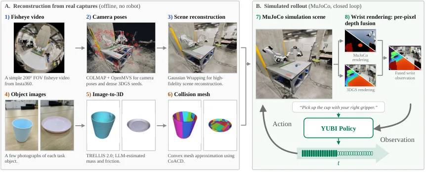
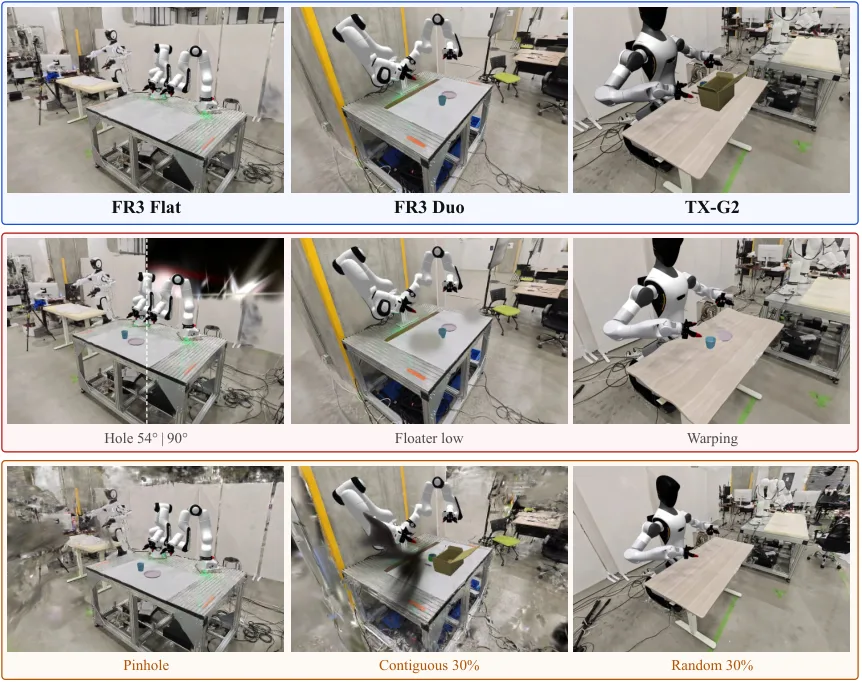

YUBI-Real2Sim：3DGS 场景质检与可靠的策略评估
YUBI-Real2Sim: 3DGS Scene Verification for Reliable Policy Evaluation
三场景（FR3 Flat / FR3 Duo / TX-G2）×三任务（Cup/Tape/Pen）×两策略 = 9 组两两排序，每格 20 次真机 + 80 次仿真 rollout；伪影条件在保持机器人、物理、碰撞几何、物体资产、初始条件、policy checkpoint、成功判据与 rollout 种子不变的前提下只改背景 Gaussian；降低覆盖条件则重训 3DGS（中心针孔 / 连续 30% 移除 / 随机 30% 移除）。结果：干净仿真排序一致 8/9（88.9%）、干净 MAE 31.39 个百分点；孔洞/漂浮物 7/9、warping 8/9；中心针孔 8/9、连续 30% 移除 7/9、随机 30% 移除 6/9（88.9%→66.7%）；用质量分预测可靠性失败（SSIM 最好 32/45，恒判可靠的平凡基线 35/45）。
clean ranking agreement
random 30% removal agreement
always-reliable baseline accuracy
clean success-rate MAE
作者、单位与技术谱系 · Research context
作者与单位
研究脉络
- YUBI 手持夹爪数据与采集平台（Ohkawa et al. 2026）方法基座关系：本篇的双鱼眼腕部视角与 YUBI 夹爪采集直接建立在作者团队前作之上；任务与策略（π0.5 系）也沿用该数据生态的设定。[官方 HTML 全文（引言与参考文献）]
- 3D Gaussian Splatting 与 3D 基础模型（物体建模）方法上游关系：重建侧用 3DGS 做 real-to-sim 场景生成、用 3D 基础模型做物体建模，二者都是现成技术；本篇的推进是**量化**重建质量对策略评估的影响。[官方 HTML 全文（摘要与第 III 节）]
- NVS-SQA 等场景质量评估方法上游（对照）关系：质量侧借用现成的无参考/有参考质量分（NVS-SQA、PSNR/SSIM/LPIPS）作为「可靠性预测器」输入，本篇的推进是检验它们能否预测排序可靠性（结论：基本不能）。[官方 HTML 全文（第 IV-B 节、表 II）]
合作网络
- NEDO 项目资助（JPNP25015）New Energy and Industrial Technology Development Organization (NEDO) → YUBI-Real2Sim 工作关系：项目资助（公开致谢）[arXiv 官方 HTML（致谢）]
- 项目页与实验平台YUBI-Real2Sim → yubi-real2sim.airoa.io 与 FR3 FR3 / TX-G2 双臂平台关系：官方项目页 / 硬件平台依赖[arXiv 官方 HTML（摘要与第 IV 节）]
- 前作作者重叠YUBI（Ohkawa et al. 2026）作者群 → YUBI-Real2Sim 作者群关系：共同署名（团队前作与本篇作者重叠）[官方 HTML 全文（引言与参考文献）]
作者姓名与项目页来自论文首页与摘要（论文报告的事实）；单位为论文未列出的字段，此处按项目页与致谢标注并明确说明「正文未给出单位脚注」，未做补写；「基座/上游」定位来自论文引言与参考文献（基于来源的解读）；作者重叠以参考文献署名为据，未推断导师/师生关系。
方法本质拆解 · What actually changed
是不是微调？——框架层面无新训练，但每条降低覆盖条件要重训 3DGS
YUBI-Real2Sim 不是训练新模型的工作：策略是既有的 π0.5 任务专属 checkpoint，物体建模用现成的 3D 基础模型，物理用 MuJoCo 现成引擎。唯一被训练的是**场景表示**：每个重建条件（干净/降覆盖）都用 COLMAP 内参、注册位姿与原始稠密种子，以种子 0 重新优化 30,000 次迭代。伪影条件不重训，只对已重建的场景做背景 Gaussian 编辑，从而保证差异只来自伪影。
有没有额外约束？——伪影注入只允许改背景，其余全部锁死
伪影条件对变量做了硬隔离：保持机器人、物理参数、碰撞几何、物体资产、初始条件、policy checkpoint、成功判据与 rollout 种子列表完全不变，只允许编辑背景 Gaussian；孔洞还有桌面上方保护区域、±60 mm 表面板层与桌下保护；漂浮物把不透明度、尺寸、位置标准差与 SH 关闭状态都固定下来。降低覆盖条件则固定移除区间位置与随机种子，并在质量评测中对每个条件保持留出视图集合一致。「中心针孔」把每帧投影从 9 个减到 1 个（L_f 前向左镜头），是最干净的「视角覆盖」单变量操作。
推理/后端到底做了什么？——真机与仿真的成对 rollout + 场景留出阈值
核心流程是成对 rollout：同一场景–任务下对两策略分别跑 20 次真机与 80 次仿真，计算真实/仿真成功率差并判定排序是否同号。可靠性预测侧是「留一场景」的分类流程：在另两个场景上按任务选质量分阈值（最大化平衡准确率，用灵敏度与最小阈值做二级 tie-break），在目标场景上评。没有学习式后端参与决策；质量分本身来自现成的 NVS-SQA 与 PSNR/SSIM/LPIPS，在留出 Test 视图与 rollout 观测视图上取均值。
方法本质是什么？——把「仿真可信度」定义为排序保持，并用受控扰动测它的边界
本质是把评测目标从「仿真像不像真机」换成「仿真能否保持两策略的相对排序」，再用受控的伪影与覆盖扰动去测这个量在什么条件下失效。它改变的是**评测协议与扰动设计**，不改变任何模型或控制器；明确没有做的是：没有提出新的重建算法、没有训练质量预测网络、也没有建立场景接受规则（作者明确说结果尚不足以支持）。
输入/先验 = 200° 双鱼眼腕部采集 + 由 3DGS 重建的场景 + 3D 基础模型物体资产 + MuJoCo 物理 + 既有 π0.5 策略；改变的位置 = 仿真场景内容（背景 Gaussian 伪影）与采集覆盖（重训 3DGS 的源帧集合），其余全部锁死；约束或合并动作 = 受控伪影注入（只改背景）+ 降低覆盖重训 + 成对 20 真机/80 仿真 rollout + 场景留出的质量分阈值分类；直接效果 = 干净排序一致 8/9，随机 30% 移除后降到 6/9，且质量分无法预测排序可靠性（低于恒判可靠基线 35/45）。

动机与问题Motivation
动机与问题
在真机上评估 VLA 策略需要反复执行与物理复位，限制了可比较的策略与环境数量；而仿真评测的实际用途是「在两个候选策略之间做选择」，因此真正相关的指标是仿真能否保持二者的真机排序，而不是仿真成功率是否逼近真机绝对值。real-to-sim 系统从真实采集重建环境再用于评估，但 3DGS 等显式重建会带来孔洞、漂浮物、形变等伪影，尤其影响依赖腕装鱼眼相机的策略。论文因此提出两个具体问题：重建缺陷是否会改变策略选择；以及场景级质量分能否在缺少目标场景真机结果时提示「这次排序不可信」。
方法Method
方法总览
系统侧（Tricorder 式流水线）：200° 双鱼眼腕部采集，把每帧投影出多个视角做 3DGS 重建；用 3D 基础模型做物体建模；MuJoCo 承载物理仿真。场景/任务/策略：FR3 Flat、FR3 Duo（双 Franka FR3，腕上装 YUBI 夹爪）与 TX-G2（AgiBot-G2 兼容平台）；任务为 Cup（抓放杯子）、Tape（把胶带放进盒子）、Pen（把笔放进盒子）；每个任务两个任务专属的 π0.5 策略（π1、π2，标签在比较前固定），共 18 个策略格与 9 组潜在两两比较。每格 20 次真机、80 次仿真 rollout，动作以 10 Hz 执行。评估条件三类：干净重建（每帧用 9 个投影视图）；伪影条件（6 个变体：2 种孔洞、3 种漂浮物配置、1 个 warping 实现，只改背景 Gaussian）；降低覆盖条件（中心针孔、连续 30% 移除、随机 30% 移除）。
关键技术细节
伪影是受控注入的：孔洞用锥体移除距竖直方向 54° 与 90° 半角处的 Gaussian，且桌子保护区域按其碰撞投影外扩 40 mm、表面 ±60 mm 板层与桌下区域受保护，因此移除只发生在桌面上方的天花板区域；漂浮物是 8 簇 × 4 个 Gaussian，分 5–15 / 15–25 / 25–35 cm 三个高度带，簇内位置标准差 18 mm、尺寸中心 31.6 mm、不透明度 0.99 且关闭视角相关 SH；warping 用固定种子放置 30 个平滑穹顶把桌面区域 Gaussian 竖直位移 10–30 mm。排序指标定义为 Acc_rank = (1/|M|) Σ 1[d_real·d_sim > 0]，即两策略选择一致的比例；反转与仿真平局都记 0，真机平局列为不可排序；次要指标是绝对成功率误差 MAE（只报告干净条件）。质量侧用 NVS-SQA 与 PSNR/SSIM/LPIPS 在留出 Test 视图与 OBS（rollout 观测）视图上评测。

实验Experiments
实验设置
规模与协议：每策略格 20 次真机 + 80 次仿真 rollout；同一场景–任务内两策略与干净/扰动变体共享初始布局与初始条件/种子表，物体在每次试验前复位到标称布局。时间上限：Duo 的 Tape/Pen 与 TX-G2 的 Pen 为 3 分钟（1800 帧），其余为 1 分钟（600 帧）。成功判据在真机由固定任务级评分表给出，在仿真用确定性物体状态谓词实现，且同一任务内对所有策略固定。降低覆盖条件：中心针孔只保留前向左镜头投影（每帧 1 个而非 9 个投影，分辨率 2048×2048、视场 90°×90°）；连续 30% 移除丢弃一段含 30% 时间有序源帧的连续区间；随机 30% 移除随机丢弃同数量帧。实际保留帧数：Duo 134/192、Flat 105/150、TX-G2 153/219；每个条件都用种子 0 重新优化 30,000 次迭代，留出视图跨条件固定且从训练集排除。对照与统计：5 种质量法（NVS-SQA 在 Test/OBS、PSNR/SSIM/LPIPS 在 Test）+「总是可靠」平凡基线；每任务阈值在另两个场景上选、在第三场景上评（场景留出）。
实验数字与比较
干净排序（来源：论文 §V-A）：8/9 = 88.9% 与真机一致，唯一倒置是 Flat/Cup——真机 40% vs 35%，仿真 37.5% vs 73.75%（600 帧）；干净 MAE 31.3889 个百分点。伪影（来源：论文表 I，同 9 组比较）：Hole 54° 与 Hole 90° 均为 7/9，三种漂浮物配置也均为 7/9，warping 保持 8/9；额外的分歧集中在 TX-G2 Tape。降低覆盖（来源：论文表 I 与 §V-C）：中心针孔 8/9、连续 30% 移除 7/9、随机 30% 移除 6/9（88.9% → 66.7%，下降 22.2 个百分点）；随机 30% 移除同时反转 TX-G2 Cup 与 TX-G2 Tape。显著性变化（来源：论文 §V-B）：Hole 90° 在 4 组比较中抹去两策略差异的显著性（如 Duo Pen 从 25/80 vs 1/80 变为 7/80 vs 4/80，p=0.534）；而 Hole 54° 把 TX-G2 Tape 从 15/80 vs 14/80 翻成 1/80 vs 9/80（p=0.018），产生与真机相反且显著的排序。质量分（来源：论文表 II，15 个匹配条件/任务）：NVS-SQA(Test) 30/45、NVS-SQA(OBS) 29/45、PSNR 31/45、SSIM 32/45、LPIPS 28/45，而「总是可靠」基线 35/45。
消融/失败边界
论文的「消融」以条件替换形式给出，结果都指向同一结论：重建质量确实影响策略选择。孔洞与漂浮物把一致性从 8/9 降到 7/9；随机 30% 移除进一步降到 6/9。论文同时指出一个容易混淆的点：排序一致性与统计显著性是两个不同结果——干净下显著的差异可能在加伪影后变得不显著（Hole 90° 抹去 4 组显著性），而某些条件下又会出现「与真机相反但统计显著」的排序（Hole 54° 的 TX-G2 Tape）。明确的失败边界：质量分预测可靠性没有通过——SSIM 最好也是 32/45，低于恒判可靠的 35/45；OBS 视图的 NVS-SQA 只在 Cup 上改善（12/15），在 Tape 上崩到 2/15；作者指出 Pen 的满分来自标签恒为可靠而非检测到失败，Tape 的三处分歧全在 TX-G2，使该折只有单一类别、所有质量法都漏检。
局限与迁移Limitations & Transfer
局限与待核验
作者明确承认的限制（写进摘要与结论）：这些结果尚未建立通用的场景接受规则；质量基于可靠性的预测在任务间不一致（Cup 受益、Tape/汇总不受益）。我们的待核验项：(a) 每策略仅 20 次真机 rollout，论文也明确说明 Wilson 区间是成功率估计区间、不是排序准确率的置信区间，因此 8/9 这一比例的不确定性无法由原文给出；(b) 「9 组比较」由 3 场景 × 3 任务构成，其中部分场景–任务只有两个策略且可能同时零成功，论文说明这类比较在仿真侧记为平局并留在分母，需注意其对 Acc_rank 的影响；(c) warping 只用一个固定种子表征一次实现，而非随机缺陷分布，论文自己写明这一点；(d) 真机标签由人工按固定评分表给出，评分表与仿真谓词的一致性未做单独的重复性/一致性研究报告；(e) 项目页（yubi-real2sim.airoa.io）已公开，但论文未给出代码仓库地址，端到端复现属待核验。
与你研究路线的关系
可迁移点有三。第一，「排序一致性」而不是「绝对误差」作为验收指标，可以直接搬到你的算法对比里：当两组方法都好但相对优劣才是决策依据时，用「相对排序是否保持」评估仿真/代理指标（例如仿真数据、代理传感器、降采样数据）是否可用于选型。第二，受控伪影注入（只改背景、保持物理/资产/种子不变）是一套干净的「扰动—敏感性」实验设计；你可以照此只改一个因素（如点云密度、回环比例）来测流水线的敏感性。第三，「质量分不能预测可靠性」是一条负面但重要的工程纪律：不要用 PSNR/SSIM 当场景或数据的准入判据，而应对采集覆盖（尤其是连续帧缺失）单独做敏感性测试——论文里随机 30% 移除把一致性从 88.9% 打到 66.7%，是影响最大的一项。下一步实验建议：(a) 在你的评测数据集上补一组「连续缺失 vs 随机缺失」对照，量测下游排序/位姿误差的差异；(b) 把「样本量不足时的排序不确定性」显式报告（论文用 20/80 次 rollout，正是弱项）；(c) 若用仿真做算法筛选，把「恒判可靠」作为质量预测的负对照基线。

